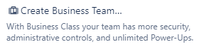
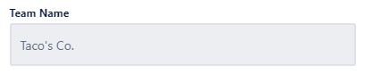
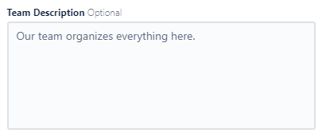
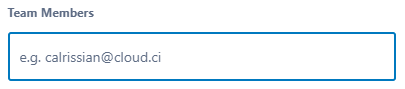
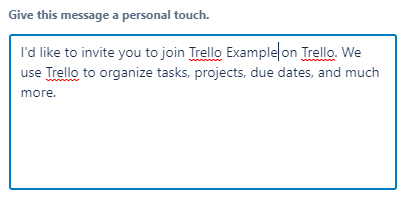

Creating a business team
Create a business team in Trello Business Class to have more security, administrative controls, and unlimited Power-Ups.
Note: Creating a business team required Trello Business Class, a premium version of
Trello. This feature is not available for users of the free version of
Trello.
To create a board, perform the following actions:
- In the top right corner, click
- In the Create window, click .
- In the Let's Build a Team window, in the  field, enter a name for your team.
- In the  field, enter a description for your team.
- Click the button.
- In the Invite Your Team window, in the  field, enter your teammates' emails.
- In the  field, edit the existing message invitation message or type your own message.
- When you're done setting up your board, click the button to invite people to your team.